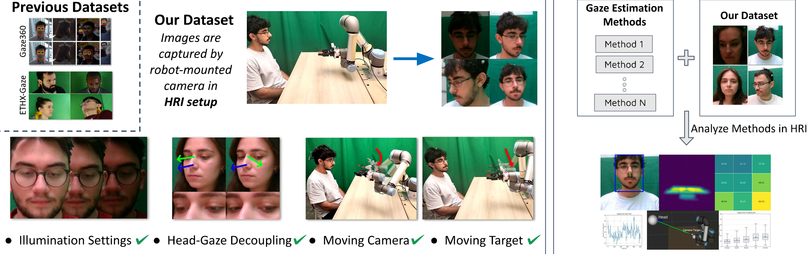
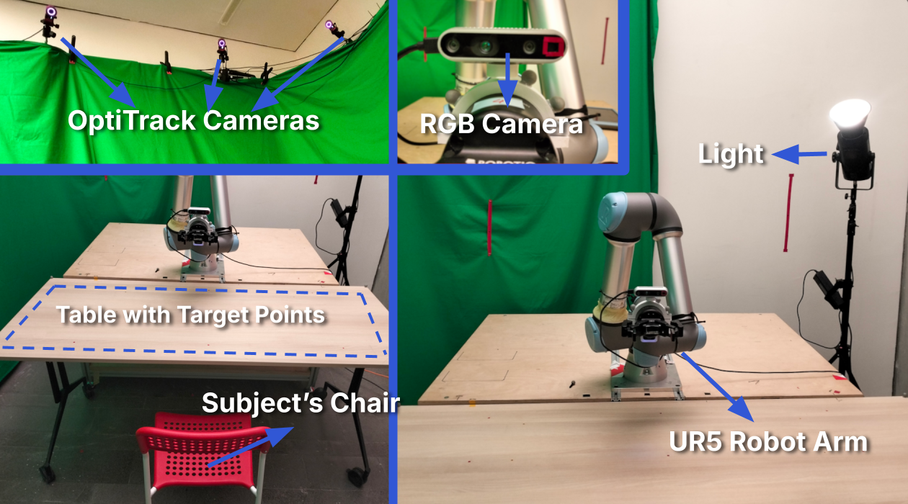
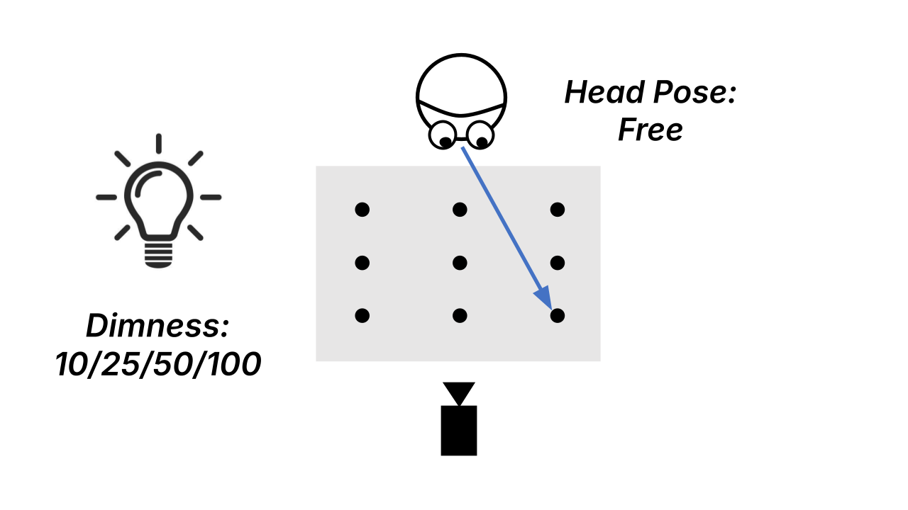
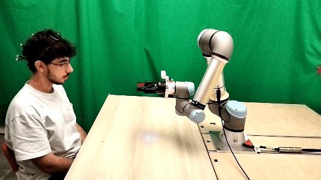
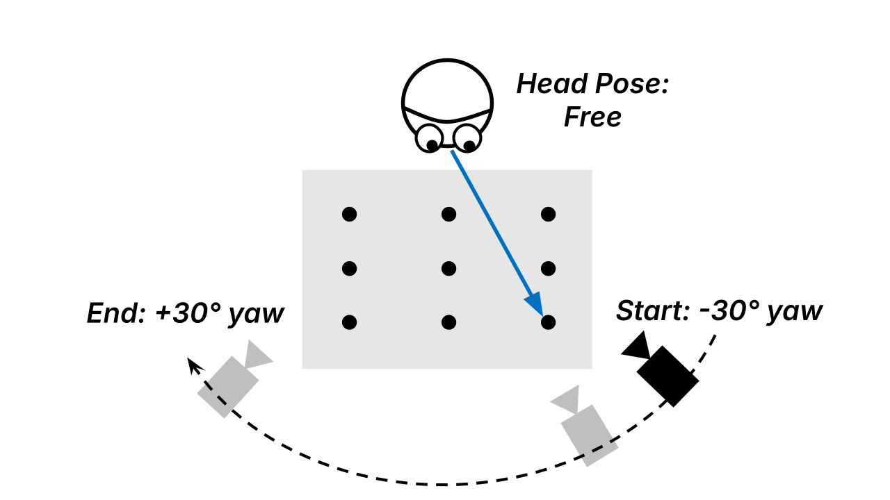
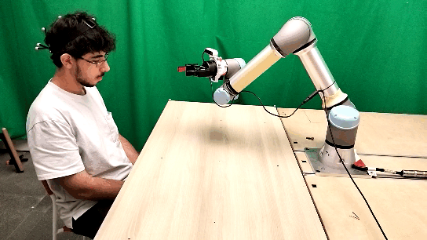
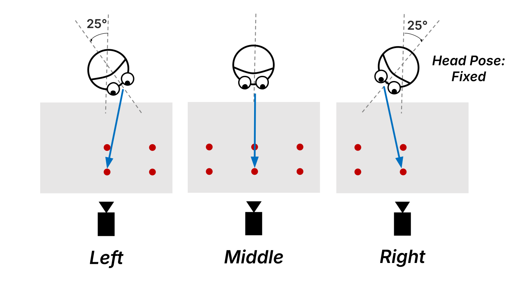
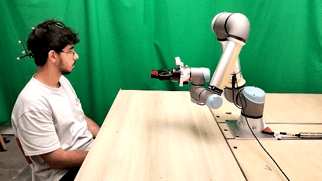
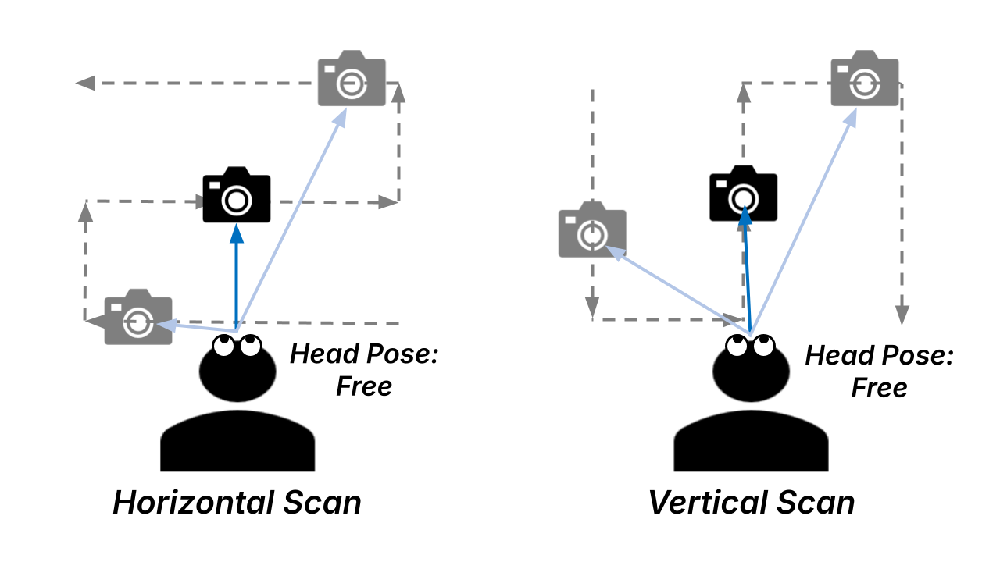
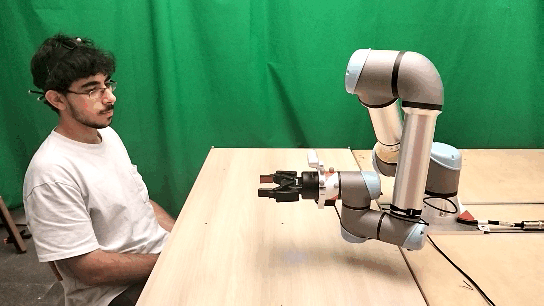

RGB video from a robot viewpoint
Participants are recorded by an Intel RealSense D435i mounted on a UR5 wrist, matching a robot perception viewpoint rather than a laptop or static camera setup.
FG 2026 · Dataset + Zero-shot Benchmark
Department of Computer Engineering and ROMER, Middle East Technical University, Ankara, Türkiye
A large-scale HRI gaze dataset for testing appearance-based 3D gaze estimation under lighting variation, robot-camera motion, head-gaze conflict, and mutual-gaze scenarios.

TL;DR
Gaze4HRI benchmarks zero-shot 3D gaze estimation in HRI settings where a robot-mounted camera observes people looking at shared workspace objects or at the robot itself. The dataset foregrounds controlled HRI variables illumination, moving camera viewpoint, head-gaze conflict, and moving target/mutual gaze while the benchmark shows that current methods still struggle, especially for steeply downward gaze.
Dataset focus
Synchronized RGB video, motion-capture-based ground truth, HRI-specific camera/target motion, and analysis-ready experiment labels.
Participants are recorded by an Intel RealSense D435i mounted on a UR5 wrist, matching a robot perception viewpoint rather than a laptop or static camera setup.
Gaze vectors are computed from calibrated interpupillary midpoint positions and known gaze target locations, expressed in the camera frame.
The dataset covers object-centered gaze on a shared table and mutual gaze where the participant follows the robot camera as a moving target.
Blinked frames are masked for gaze evaluation, and the repository also includes Blink4HRI-related tooling for blink detection experiments.
Gaze4HRI uses a controlled lab HRI setup centered around a UR5 robot arm, wrist-mounted RGB camera, and OptiTrack motion capture. This gives the benchmark accurate head/eye geometry while preserving the camera viewpoint challenges of robot perception.

Experiment modules
Gaze4HRI is organized around four experiment types, each designed to test a different challenge for gaze estimation in HRI.
Exp. 1
Controlled lighting levels test whether gaze estimation models remain accurate from dim to bright conditions.


Exp. 2
The robot-mounted camera moves on an arc around the participant while the gaze targets remain fixed on the table.


Exp. 3
Fixed head orientations create different levels of conflict between head-forward direction and gaze direction.


Exp. 4
The participant follows the moving robot camera, simulating mutual gaze with a robot “eye” under dynamic target motion.


Benchmark
Overview of model performance on Gaze4HRI across key HRI conditions
PureGaze trained on ETH-X-Gaze is the most reliable method across the HRI conditions tested.
ETH-X-Gaze-trained methods are especially robust to illumination, viewpoint variation, and head-gaze conflict.
Steeply downward gaze remains difficult for all evaluated methods, which is critical for object-centered HRI.
PureGaze (E) and GazeTR (E) stay competitive across all illumination settings, while Gaze360-trained methods are more sensitive to lighting level.
Lower values indicate more accurate gaze estimation.
| Method | 10 | 25 | 50 | 100 | CV% |
|---|---|---|---|---|---|
| PureGaze (E) | 11.73 | 11.52 | 12.18 | 10.19 | 7.50 |
| GazeTR (E) | 11.50 | 11.16 | 12.45 | 11.50 | 4.77 |
| PureGaze (G) | 16.92 | 14.68 | 15.13 | 17.82 | 9.18 |
| GazeTR (G) | 14.73 | 13.81 | 15.27 | 17.17 | 9.30 |
| L2CS-Net (G) | 19.61 | 17.60 | 18.95 | 18.99 | 4.51 |
| MCGaze (G) | 19.08 | 14.33 | 13.24 | 14.29 | 17.15 |
| GaT (G) | 17.93 | 16.74 | 15.82 | 16.35 | 5.36 |
PureGaze (E) is the strongest under moving robot-camera viewpoint variation, with only a small difference from fixed camera to camera-viewpoint setup.
Lower values indicate more accurate gaze estimation.
| Method | Fixed cam. | Cam. view. | p |
|---|---|---|---|
| PureGaze (E) | 10.19 | 11.12 | .460 |
| GazeTR (E) | 11.50 | 14.42 | .004 |
| PureGaze (G) | 17.82 | 18.46 | .242 |
| GazeTR (G) | 17.17 | 17.80 | .308 |
| L2CS-Net (G) | 18.99 | 18.15 | .045 |
| MCGaze (G) | 14.29 | 15.57 | .034 |
| GaT (G) | 16.35 | 16.05 | .486 |
PureGaze (E) gives the lowest overall error. Gaze360-trained methods, especially MCGaze, degrade more strongly as head-gaze conflict increases.
Lower values indicate more accurate gaze estimation.
| Method | Error | β | % β > 0 |
|---|---|---|---|
| PureGaze (E) | 7.25 | +0.05 | 60 |
| GazeTR (E) | 8.67 | -0.05 | 36 |
| PureGaze (G) | 11.38 | +0.04 | 50 |
| GazeTR (G) | 12.93 | +0.38 | 92 |
| L2CS-Net (G) | 16.62 | +0.50 | 92 |
| MCGaze (G) | 20.24 | +0.99 | 100 |
| GaT (G) | 12.09 | +0.20 | 94 |
Errors increase as targets move closer to the subject, corresponding to steeper downward gaze. This is a key HRI failure mode for tabletop interaction.
These results show that gaze estimation becomes less reliable in tabletop HRI scenarios, where people naturally look downward toward shared objects.
PureGaze (E) is most accurate in the moving-target mutual-gaze setup; PureGaze/GazeTR architectures are more resilient to pitch-yaw eccentricity than the other methods.
Lower values indicate more accurate gaze estimation.
| Method | Fast-H | Fast-V | Slow-H | Slow-V | β pitch | β yaw |
|---|---|---|---|---|---|---|
| PureGaze (E) | 5.38 | 5.31 | 5.41 | 5.30 | 0.08 | 0.01 |
| GazeTR (E) | 10.48 | 10.50 | 10.49 | 10.25 | -0.03 | 0.03 |
| PureGaze (G) | 9.75 | 9.58 | 9.15 | 9.47 | 0.10 | -0.01 |
| GazeTR (G) | 7.61 | 7.59 | 7.25 | 7.20 | 0.10 | 0.02 |
| L2CS-Net (G) | 15.33 | 15.83 | 15.23 | 15.41 | 0.30 | 0.66 |
| MCGaze (G) | 22.93 | 24.32 | 22.69 | 23.28 | 1.40 | 0.82 |
| GaT (G) | 16.43 | 16.89 | 16.26 | 16.23 | 0.49 | 0.65 |
Dataset format
Each timestamp folder stores one recorded trial for a subject, experiment type, and target point. The raw format keeps the RGB stream together with synchronized pose, gaze-target, robot, camera, and blink-related signals so the same recording can be used for gaze benchmarking, blink masking, and future HRI analysis.
YYYY-MM-DD/
└── subj_XXXX/
└── exp_type/
└── point/
└── timestamp/
├── rgb_video.mp4
├── rgb_timestamps.npy
├── rgb_camera_settings.json
├── camera_intrinsics.npy
├── camera_poses.npy
├── head_poses.npy
├── head_bboxes.npy
├── eye_positions.npy
├── eye_position_in_head_frame.npy
├── target_positions.npy
├── blink_annotations_by_*.npy
├── table_pose.npy
├── ur5_base_pose.npy
└── ur5_joint_states.npyrgb_video.mp4, rgb_timestamps.npy, and camera settings for frame-level evaluation.
eye_positions.npy and target_positions.npy define the ground-truth 3D gaze vector.
head_poses.npy, head_bboxes.npy, camera_poses.npy, and intrinsics support pose-aware analysis.
ur5_joint_states.npy, ur5_base_pose.npy, and table_pose.npy describe the HRI setup geometry.
blink_annotations_by_*.npy marks blink frames for masking gaze evaluation or training Blink4HRI models.
Citation
@inproceedings{sezer2026gaze4hri,
title={Gaze4HRI: Zero-shot Benchmarking Gaze Estimation Neural-Networks for Human-Robot Interaction},
author={Sezer, Berk and Küçük, Ali Görkem and Şahin, Erol and Kalkan, Sinan},
booktitle={2026 International Conference on Automatic Face and Gesture Recognition (FG)},
year={2026},
doi={10.5281/zenodo.19710372}
}